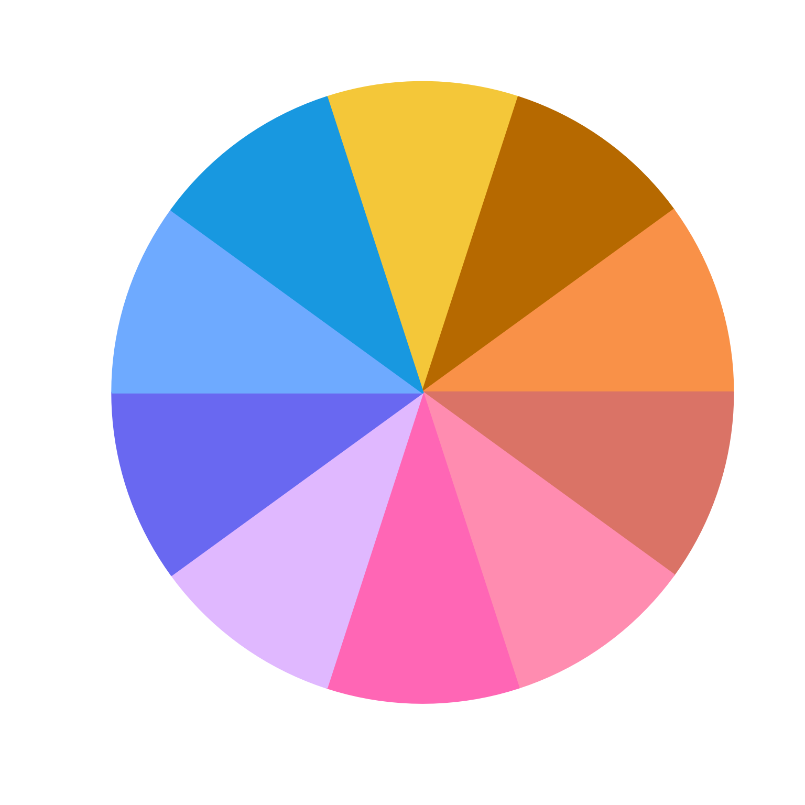

Add colorjam chroma/luminance steps to adjust a series of color hues to visibly distinct categorical colors.
add_colorjam_step(step, step_list, verbose = TRUE, ...)character string with the step name.
list with elements "C" and "L" which each contain
a numeric vector with values in the range c(0, 100).
In future the step_list may permit other color channels, such
as "S" and "L" for use with HSL color space, or "S" and "V"
for use with HSV color space.
additional arguments are ignored.
TRUE, invisibly.
Other colorjam hue warp:
add_colorjam_preset(),
adjust_hue_warp(),
approx_degrees(),
colorjam_presets(),
colorjam_steps(),
display_degrees(),
h2hwOptions(),
h2hw(),
hcl_to_hsl_hue(),
hsl_to_hcl_hue(),
hw2h(),
mean_angle(),
plot_colorjam_preset(),
remap_colorjam_preset(),
validate_colorjam_preset()
colorjam_steps()
#> [1] "v19" "v20" "v23" "v24"
colorjam_steps("v24")
#> $C
#> [1] 88 110 99 80 105 97
#>
#> $L
#> [1] 80 51 65 58 76 62 84 55 71 61 82 66 90 45 61 53 71 58
#>
Cvals <- c(110, 88, 99, 80, 105, 97)
Lvals <- c(51, 82, 70, 60, 77, 65)
add_colorjam_step("new_v24", step_list=list(C=Cvals, L=Lvals))
#> ℹ added step 'new_v24'.
colorjam_steps()
#> [1] "new_v24" "v19" "v20" "v23" "v24"
colorjam_steps("new_v24")
#> $C
#> [1] 110 88 99 80 105 97
#>
#> $L
#> [1] 51 82 70 60 77 65
#>
color_pie(rainbowJam(n=10,
step="new_v24",
phase=c(2,1,3,4,5,6)))

add_colorjam_step("new_v24", step_list=NULL)
#> Warning: object 'step' not found
#> ℹ removed step 'new_v24'.
colorjam_steps()
#> [1] "new_v24" "v19" "v20" "v23" "v24"